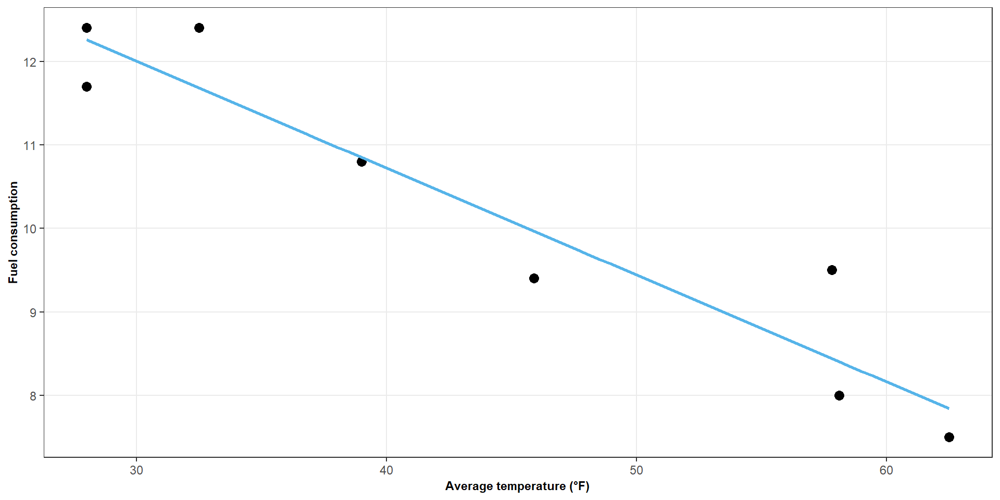
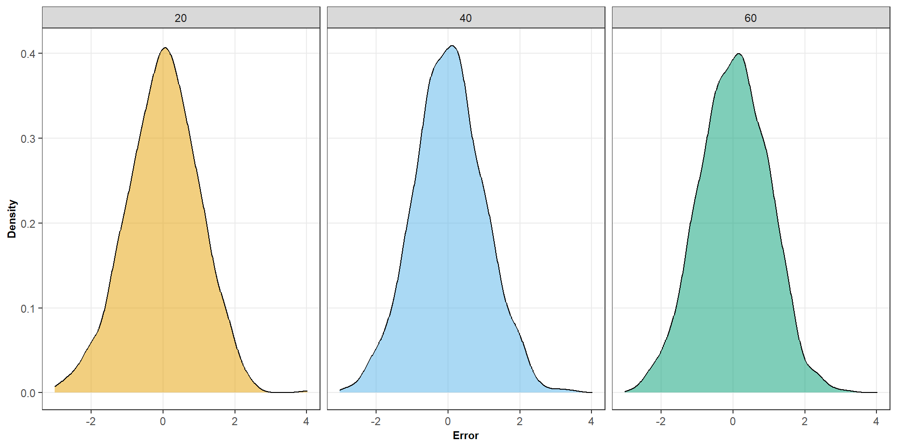
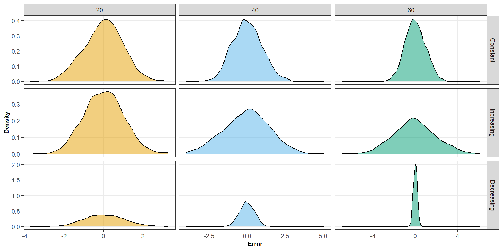
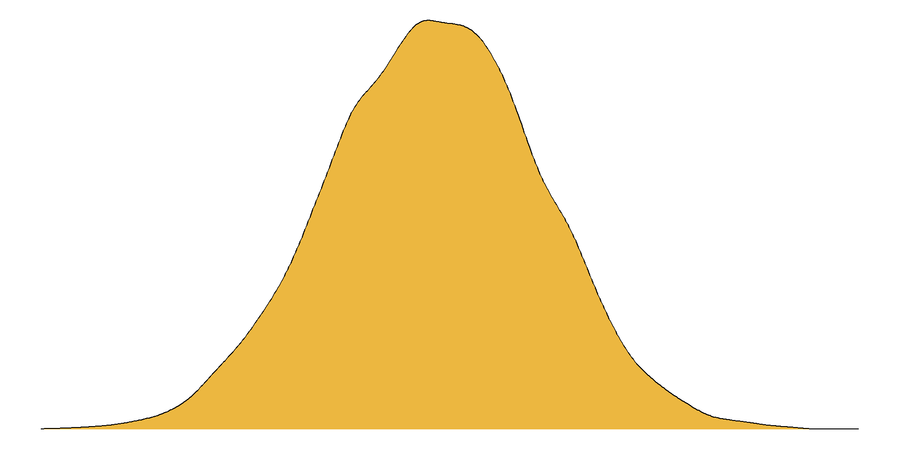
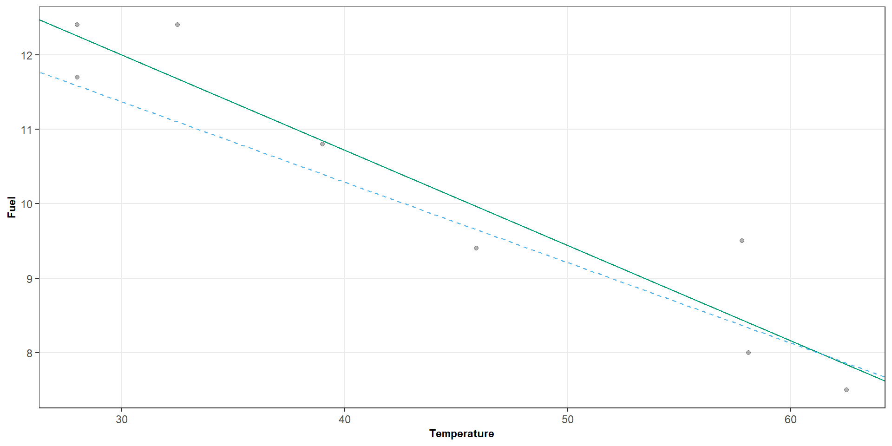
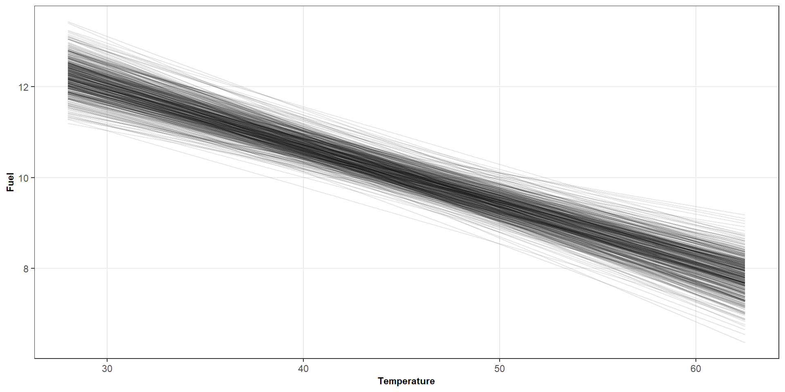
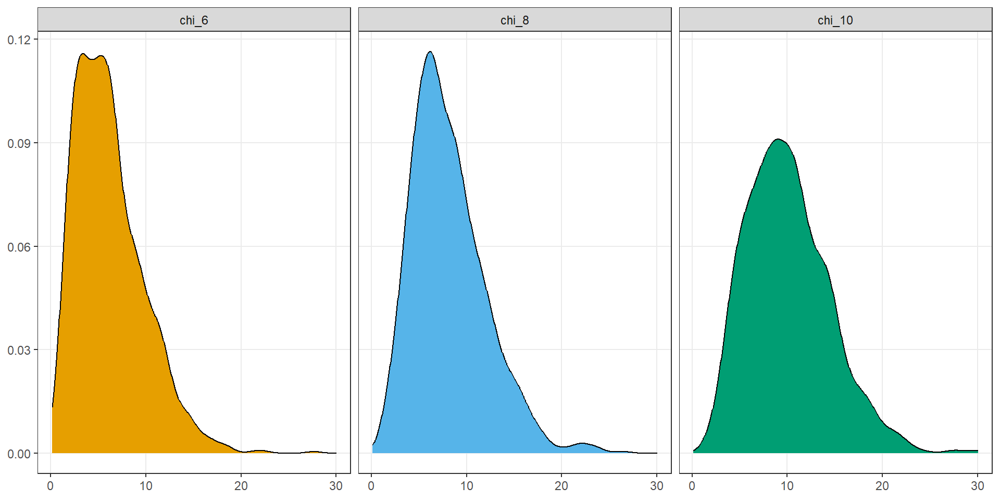
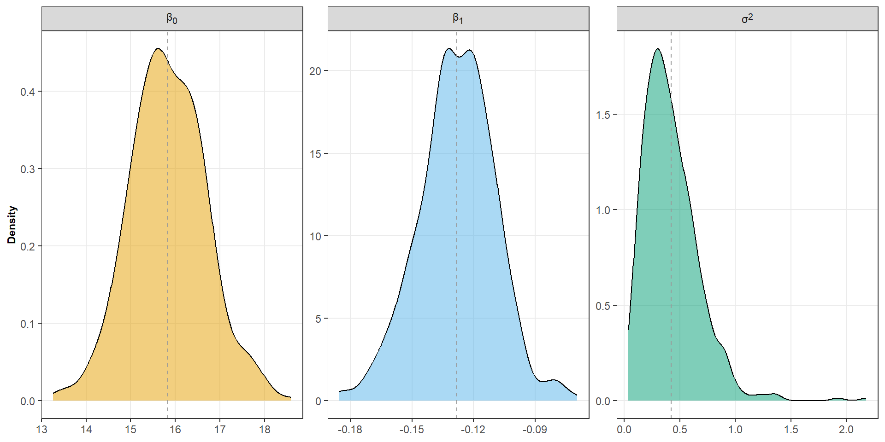

| Temperature | Fuel |
|---|---|
| 28.0 | 12.4 |
| 28.0 | 11.7 |
| 32.5 | 12.4 |
| 39.0 | 10.8 |
| 45.9 | 9.4 |
| 57.8 | 9.5 |
| 58.1 | 8.0 |
| 62.5 | 7.5 |
Simple linear regression models
ST303 - Linear Models
Recap
In the last two lectures we have:
- Used a line to describe the relationship between two numerical variables
- Defined residuals as the difference between observed and predicted values
- Chosen the line that minimises the sum of squared residuals
- Derived the OLS estimates
\[ \boxed{ \hat{\beta}_0 = \bar{y} - \hat{\beta}_1 \bar{x} \qquad \hat{\beta}_1 = \frac{S_{xy}}{S_{xx}} } \]
Check in: Was there anything that was not clear or confusing from last week?
Today
Today we will take a look at
- The simple linear regression model in more detail
- Some assumptions about our error term \((\varepsilon)\)
- The sampling distributions of our parameters \((\beta_0, \beta_1, \sigma^2)\)
We will continue using our fuel-consumption data.

Figure 1: Scatter plot showing the relationship between temperature and fuel consumption
Question: Does temperature completely determine fuel consumption?
A line doesn’t explain everything
Why don’t all office complexes use exactly the amount of fuel predicted by the line?
- Temperature is not the only factor affecting fuel use
- Buildings differ from one another
- Measurements are not perfect
- There is simply natural/random variation
The line describes the expected value of \(Y\) for a given \(X\).
The remaining variation is not explained by the line.
Same temperature, different outcomes
Suppose two office complexes both have a temperature of \(40^\circ \text{F}\).
\[ \mathbb{E}[Y \; \vert \; X = 40] = 10.72 \]
- However, one complex might use 11.3 units of fuel.
- Another complex might use 10.1 units of fuel.
- Because temperature is not the only thing affecting fuel use.
Type of building
Insulation
Cost of fuel
The basic idea
For any given value \(x\), we can think of fuel consumption as having two parts:
\[ y_i \sim \text{Systematic part } + \text{ Random part} \]
In the case of our simple linear regression model
\[ \underbrace{\beta_0+\beta_1x_i}_{\text{systematic part}} \qquad + \qquad \underbrace{\epsilon_i}_{\text{random part}} \]
- \(\beta_0 + \beta_1x_i\) tells us what we expect
- \(\epsilon_i\) tells us how much this observation differs from what we expect
Population model versus fitted model
The line we estimate from our data is only an estimate of an underlying population relationship.
\[ y_i = \beta_0 + \beta_1x_i + \epsilon_i \quad \epsilon_i \sim \mathcal{N}(0, \sigma^2) \]
- \(\beta_0\) = Expected value of \(y\) when \(x\) = 0
- \(\beta_1\) = Expected change in \(y\) for a unit increase in \(x\)
- \(\sigma^2\) = The variance of the errors
These are called population parameters
Unfortunately, we usually do not know these values
What we do instead is get an estimate of these parameters
\[ \hat{y_i} = \hat{\beta_0} + \hat{\beta_1}x_i \]

Interpretation
\[ y_i \sim 15.84 - 0.128x_i \]
For each one-degree increase in temperature, predicted fuel consumption decreases by approximately \(0.128\) units, on average.
In this sample
Errors versus residuals
The population error can be represented as
\[ \varepsilon_i = y_i - (\beta_0 + \beta_1x_i) \]
- But we do not know what \(\beta_0\) or \(\beta_1\) are
- So we can never observe \(\varepsilon_i\)
- Instead we calculate a residual
\[ e_i = y_i - \hat{y_i} \]
Errors versus residuals
Error
\[ \varepsilon_i = y_i - (\beta_0 + \beta_1x_i) \]
- Population quantity
- Unobservable
- From unknown parameters
Residual
\[ e_i = y_i - \hat{y_i} \]
- Sample quantity
- Observable
- From fitted parameters
Errors belong to the population model
Residuals come from our fitted model.
Why does this matter
To actual use our model, we make several assumptions about the errors.
- Centered around 0
- Roughly equally variable
- Independent
- Normally distributed
Some assumptions about the errors
Errors have mean zero
\[ \mathbb{E}[\epsilon_i]=0 \]
This means that, on average, the model does not systematically over-predict or under-predict.
\[ \epsilon_i < 0 \longrightarrow \text{Too low} \qquad \epsilon_i > 0 \longrightarrow \text{Too high} \]
Over many observations, these balance out
Some assumptions about the errors
Constant variance
\[ \text{Var}(\epsilon_i)=\sigma^2 \]
The amount of variation around the regression line is assumed to be roughly the same across values of \(X\).

Some assumptions about the errors
Constant variance

Some assumptions about the errors
Independence
The error for one observation should not tell us anything about the error for another observation.
\[ \text{Cov}(\epsilon_i,\epsilon_j)=0 \qquad i\neq j \]
If Monday’s fuel use was unusually high, it should not anything about Tuesday’s?
Some assumptions about the errors
Normally distributed errors
\[ \epsilon_i \sim N(0,\sigma^2) \]
Errors are normally distributed with a mean of 0 and a variance of \(\sigma^2\)

Normality matters mainly for the exact small-sample inference that comes later.
Putting it all together
Our simple linear regression model is
\[ y_i \sim \beta_0 + \beta_1 x_i + \varepsilon_i \]
with errors that are
\[ \begin{align*} \mathbb{E}[\varepsilon_i] &= 0 \\[8pt] \text{Var}(\varepsilon_i) &= \sigma^2 \\[8pt] \text{Cov}(\varepsilon_i, \varepsilon_j) &= 0 \\[8pt] \varepsilon_i &\sim N(0, \sigma^2) \end{align*} \]
Errors are centered + equally spread + independent + approximately normally
Population versus sample model
The population model is
\[ Y_i = \beta_0 + \beta_1x_i + \epsilon_i \]
But we don’t know
\[ \beta_0,\quad \beta_1,\quad \sigma^2 \]
So we use our sample data to estimate them.
Which gives us
\[ \hat\beta_0,\qquad \hat\beta_1,\qquad \hat\sigma^2 \]
Different samples will give different estimates.
Imagine repeating the study
Suppose we could repeatedly collect new samples from the same population.
Each sample would give us:
- A different dataset
- A different fitted line
- A different \(\hat\beta_0\)
- A different \(\hat\beta_1\)
The estimates themselves have distributions.
Let’s look at the original data
coeffs.R
\[ N = 8 \qquad \hat{\beta_0} = 15.84 \qquad \hat{\beta_1} = -0.128 \qquad \hat{\sigma^2} = 0.428 \]
Now let’s simulate a dataset
simulation.r
| Temperature | Fuel |
|---|---|
| 28.0 | 12.1 |
| 28.0 | 11.6 |
| 32.5 | 11.2 |
| 39.0 | 9.8 |
| 45.9 | 9.7 |
| 57.8 | 7.7 |
| 58.1 | 7.3 |
| 62.5 | 9.5 |
Let’s compare our coefficients
Original model
\[ \hat{\beta_0} = 15.84 \qquad \hat{\beta_1} = -0.128 \qquad \hat{\sigma^2} = 0.428 \]
simulated-regression.R
Simulated model
\[ \hat{\beta_0} = 14.61 \qquad \hat{\beta_1} = -0.108 \qquad \hat{\sigma^2} = 0.807 \]

Let’s do 500 simulations!
set.seed(54321) # Reprodicibility
# Simulate some data and fit model 500 times
sim_results <- purrr::map(1:500, function(i) {
# Simulation -----------------------------------------------------------------
x <- fuel$temp
esp <- rnorm(n = n, mean = 0, sd = sqrt(sigma_sq))
y <- beta_0 + (beta_1 * x) + esp
sim_data <- tibble(temp = x, fuel = y)
# Modelling ------------------------------------------------------------------
sim_fit <- lm(fuel ~ temp, data = sim_data)
beta_0_sim <- coef(sim_fit)[1]
beta_1_sim <- coef(sim_fit)[2]
sigma_sq_sim <- sum(residuals(sim_fit)^2) / (8 - 2)
# Output ---------------------------------------------------------------------
tibble(
sample = i,
beta_0 = beta_0_sim,
beta_1 = beta_1_sim,
sigma_sq = sigma_sq_sim,
data = list(sim_data)
)
}) |>
bind_rows()
Figure 2: 500 simulated regression lines

Figure 3: Distribution of estimated parameters
These are called sampling distributions
Sampling distribution of \(\beta_1\)
Under the assumptions of linear regression
\[ \boxed{\hat{\beta_1} \sim \mathcal{N}(\beta_1, \frac{\sigma^2}{S_{xx}})} \]
where
\[ S_{xx} = \sum^n_{i=1}(x_i - \bar{x})^2 \]
Uncertainty in our estimate decreases when
More variation in \(X\)
\[ S_{xx} \uparrow \]
Less unexplained variation
\[ \sigma^2 \downarrow \]
Sampling distribution of \(\beta_0\)
Under the assumptions of linear regression
\[ \boxed{\hat{\beta_0} \sim \mathcal{N}\Big(\beta_0, \sigma^2 \big( \frac{1}{n} + \frac{\bar{x^2}}{S_{xx}} \big) \Big)} \]
Here, the uncertainty in \(\hat{\beta}_0\) depends on
- \(\sigma^2\): More noise means more uncertainty
- \(n\): The larger the sample the less uncertain our estimate is
- \(\bar{x}\) being close to 0
- If \(\bar{x}\) is far from zero, estimating the intercept becomes harder.
The sampling distribution of \(\sigma^2\)
\[ \sigma^2 = \frac{\sum \varepsilon_i^2}{n - 2} \]
Thus, \(\sigma^2\) would follow \(\sigma^2 \sim \chi^2_{n - 2}\)

Wrapping up
- We can get estimates of our population parameters \(\beta_0, \beta_1, \sigma^2\)
- Errors are unobservable, while residuals are observable
- We make several assumptions about the errors
- Our parameters have known properties and distributions

Some useful R code for linear models
useful-code.R
# Fit a simple linear regression model
fit <- lm(fuel ~ temp, data = fuel)
## View the model coefficients
coef(fit)
# View the intercept
coef(fit)[1]
# View the lope
coef(fit)[2]
# Get the full model summmary
summary(fit)
# View the residuals
residuals(fit)
# View the fitted values
fitted(fit)
# Make predictions from a fitted model
predict(fit, newdata = tibble(temp = 40))
# Or make predictions from a range of values
predict(fit, newdata = tibble(temp = c(30, 40, 50, 60))